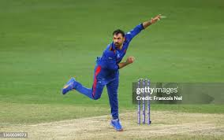
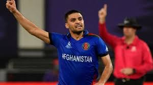

Afghanistan T20I Team
Rising stars with world-class spin bowling.
About Afghanistan T20I Team
Country: Afghanistan
Home Ground: Various (e.g., Sharjah Cricket Stadium)
Captain: Rashid Khan
Coach: Jonathan Trott
Afghanistan’s T20I team has emerged as a formidable force, known for its spin bowling and aggressive batting.
Afghanistani Players
Rashid Khan (C)
Captain, leg-spinner.
Rahmanullah Gurbaz
Wicketkeeper-batsman, explosive opener.
Ibrahim Zadran
Batsman, reliable anchor.
Hazratullah Zazai
Batsman, power-hitting opener.

Mohammad Nabi
All-rounder, off-spinner.

Azmatullah Omarzai
All-rounder, pace bowler.
Najibullah Zadran
Batsman, middle-order finisher.
Mujeeb Ur Rahman
Spinner, mystery bowler.
Noor Ahmad
Spinner, wrist-spinner.

Naveen-ul-Haq
Bowler, pace bowler.
Fazalhaq Farooqi
Bowler, swing specialist.